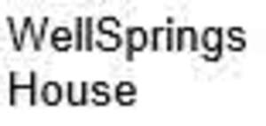

Trade Mark Journal No.2025/044 31 October 2025
UK00004279167 16 October 2025 (41,43,44)
Mark 1
WELLSPRINGS HOUSE
Mark 2
WellSprings House
Mark 3

Mark 4
- Class 41
- Educational services relating to wellness, art and therapy; organisation and conducting of workshops, seminars, and events in the fields of complementary medicine, mindfulness, and creative arts; wellness coaching; art instruction including painting, sculpting, pottery and calligraphy; organisation of art exhibitions and cultural events; provision of courses and training programmes in restorative, curative and preventative therapies; providing fitness and exercise facilities.
- Class 43
- Rental of rooms, studios and event spaces; rental of rooms, studios and event spaces, for use in wellness, therapy, and artistic activities; provision of facilities for workshops, retreats, exhibitions and therapy sessions; rental of spaces for educational and cultural events; provision of temporary accommodation and hospitality services in connection with wellness retreats; provision of food and drink for participants of wellness retreats.
- Class 44
- Providing wellness services; providing complementary medicine services; wellness centres offering yoga, fitness classes, personal training, massage therapy, mindfulness and meditation services; therapy services; preventative therapy services; restorative therapy services; curative therapy services; acupuncture; homeopathic services; craniosacral therapy; aromatherapy services; massage services; Indian head massage; Reiki services; meditation services; yoga, tai chi, qigong and pilates therapy services; psychotherapy; sound bath therapy; holistic health services; art therapy services; group art therapy; consultancy and advisory services relating to restorative, curative and preventative therapies; wellness spa services including hammam, sauna, cold plunge, ice bath and jacuzzi facilities.
GRL Malvern Ltd
Representative: Appleyard Lees IP LLP